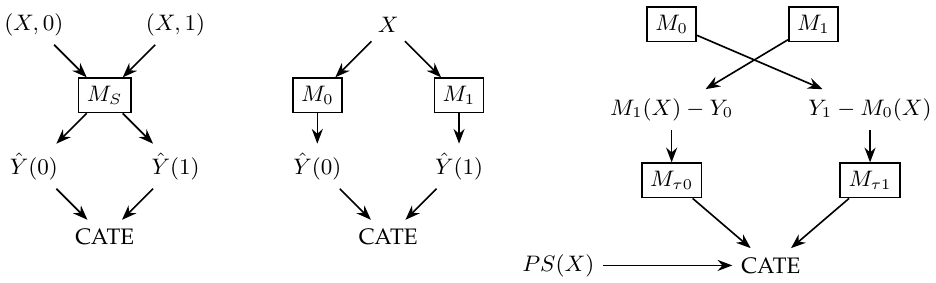

Chapter 21. Meta-learners
These ML constructions estimate CATE. Fit on nonrandom data only after addressing confounding, and evaluate on separate randomized data where possible. The binary-treatment target is \(E[Y_i(1)-Y_i(0)\mid X]\). Causal interpretation requires consistency, conditional exchangeability and overlap. For continuous treatment, a conditional derivative needs a model appropriate for the dose-response relation.
S-learner (“Go-Horse Learner”).
Use one ML model \(M_S\) to estimate \(\mu(X,T)=E[Y\mid T,X]\). Fit with \((X,T)\), then pass the same \(X\) through the model once with \(T=0\) and once with \(T=1\). The predicted outcome difference gives CATE. A cumulative gain curve can reveal overfitting; tune max_depth.
A possible weakness is shrinkage of the estimated treatment effect toward zero. An S-learner is a regularized ML model, so regularization restricts the estimated treatment effect. If other covariates have strong predictive effects, it may drop the treatment variable entirely.
T-learner.
Splitting the data addresses complete omission of treatment. Fit \[\mu_0(x)=E[Y\mid T=0,X=x],\qquad \mu_1(x)=E[Y\mid T=1,X=x],\] then estimate \(\hat\tau(x)=M_1(x)-M_0(x)\). The diagram sends treatment and control data to separate models, then applies both models to the same \(X\) and subtracts predictions.
My annotation. Splitting also shrinks the data sets. For example, abundant \(T=0\) data may support a good fit, but scarce \(T=1\) data force a simpler model to avoid overfitting. Regularization then creates a tension with effect estimation.
X-learner.
The first stage resembles the T-learner; another stage fits the imputed effects and uses a propensity model.
Fit \(\hat M_0(x)\approx E[Y\mid T=0,X=x]\) and \(\hat M_1(x)\approx E[Y\mid T=1,X=x]\). The relationships can differ for \(T=0\) and \(T=1\).
Impute treatment effects by differencing observed outcomes and predicted missing outcomes: \[\hat\tau_i^{(0)}=\hat M_1(X_i)-Y_i\quad(T_i=0),\qquad \hat\tau_i^{(1)}=Y_i-\hat M_0(X_i)\quad(T_i=1).\]
Fit effect models \(\hat M_{\tau0}(x)\approx E[\hat\tau^{(0)}\mid X=x,T=0]\) and \(\hat M_{\tau1}(x)\approx E[\hat\tau^{(1)}\mid X=x,T=1]\).
Combine them: \[\hat\tau(x)=\hat M_{\tau0}(x)\hat e(x)+\hat M_{\tau1}(x)\{1-\hat e(x)\}.\]
The flowchart crosses the two outcome models over to the opposite groups, constructs CATE pseudo-outcomes, fits two further models, and combines them using propensity \(PS(X)\). My interpretation is a larger \(e(X)\) means more \(T=1\) observations and a more accurate corresponding outcome model, warranting greater weight. This refers to the model supplying the imputed counterfactual used by the opposite group’s effect regression.

S-, T- and X-learner pointing relations.
Using the propensity as this combination weight is a useful rule, not a universal minimum-variance choice. Regularization bias can depend on the learners and need not always point toward zero.